We help manufacturers and public-sector organisations work out what to build and why, then design it, engineer it and get it made. One partner from the first question to the factory floor, and to the service people rely on.
Product strategy, industrial design and design for manufacture. We shape what you build around real processes, costs and quality targets, so it scales without surprises.
Selected workWe bring a maker's discipline to public-sector challenges: research, prototyping and delivery of the products, equipment and services that citizens use every day.
Talk to usSupplier selection, tooling, samples and production management. A shorter, more resilient supply chain, run by people who care how things are made.
Sourcing in Portugal